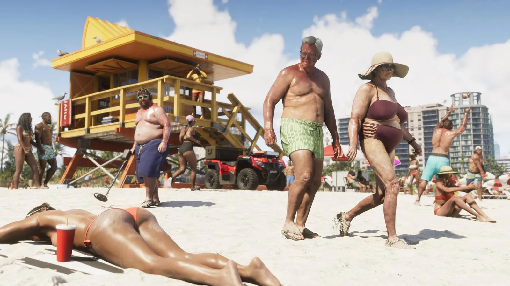

Места WAiNK в GTA 6: что сканировать и сколько нужно
Опубликовано:

- WAiNK — приложение в телефоне героев: им сканируют места, скульптуры, машины и татуировки.
- Мест для скана — 112: 31 достопримечательность, 35 диковинок, 23 скульптуры, 23 тега No Flusher.
- Для 100% и трофея You WAiNKer! нужно любые 100.
- Стрит-арт AHOL и муралы 1010 сканируются так же, но в эти 100 не входят.
Как сканировать
- Достаньте телефон — ↑ на крестовине — и откройте WAiNK.
- Ходите пешком: игра сама сообщит, что рядом есть что отсканировать.
- Наведите камеру на объект и сделайте скан — он появится в меню Прогресс → Коллекции → Места WAiNK.
Что считается
| Набор | Сколько | Что это |
|---|---|---|
| Достопримечательности (Landmarks) | 31 | заметные здания и места: например, бумажная фабрика Lawton Co. в Moreau, Dock Ring в Downtown, Grayson Assembly |
| Диковинки (Curiosities) | 35 | странные места: например, испанские руины Imperial Spanish Ruins на юго-западной вершине Mount Kalaga, Big Entrance на острове Dalton |
| Скульптуры (Sculptures) | 23 | статуи и арт-объекты: например, робот Princes Robot Bubblegum в Washington Beach, Monument of Leonidan Supremacy |
| Теги No Flusher | 23 | цветные метки краской на земле в городе — следы «движения No Flusher»; первая — к востоку от бара The Banana Hole в Ocean Beach |
В меню коллекций вкладка WAiNK показывает 89 мест — первые три набора; теги No Flusher игра считает отдельно и без списка конкретных мест. В трофее You WAiNKer! засчитываются достопримечательности, диковинки, скульптуры, теги No Flusher и рекламные щиты Peewees — подойдут любые 100.
Испытание и награды
| Что | Награда |
|---|---|
| любые 4 достопримечательности, диковинки или скульптуры | испытание «WAiNK Locations» (раздел «Исследование») |
| любые 100 сканов | трофей You WAiNKer! и пункт 100% |
Кроме мест, WAiNK сканирует машины (идут в базу «Прогресс») и татуировки из журналов — подробнее в обзоре коллекционок.
Частые вопросы
Сколько мест WAiNK в GTA 6?
112: 31 достопримечательность, 35 диковинок, 23 скульптуры и 23 тега No Flusher.
Сколько сканов WAiNK нужно для 100%?
Любые 100 — столько же для трофея You WAiNKer!.
Считаются ли муралы и стрит-арт?
Стрит-арт AHOL и муралы 1010 сканируются так же, но в 100 мест не входят — у них свои разделы.
Как открыть WAiNK?
Достаньте телефон (↑ на крестовине) и выберите приложение WAiNK.
Источники: PowerPyx, «GTA 6 All WAiNK Scan Locations», «Curiosities», «No Flusher Tags» и Trophy Guide, 18.11.2026; GMTreks, «WAiNK Locations», 19.11.2026; Bloxodes, «Waink Locations», 18.11.2026; Allthings.how, «How Many Collectibles Are in GTA 6», 20.11.2026. Кнопки указаны для PS5, в скобках — Xbox.